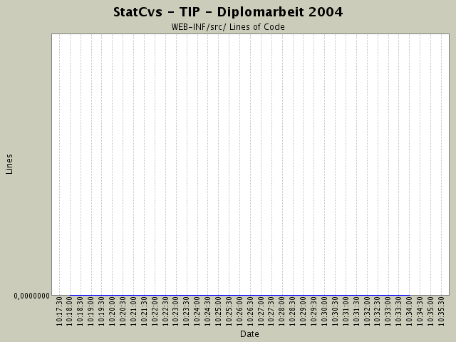

Summary Period: 2004-02-25 to 2004-04-17
[root]/WEB-INF/src
 de
(0 files, 0 lines)
de
(0 files, 0 lines)
 fub
(0 files, 0 lines)
fub
(0 files, 0 lines)
 tip
(2 files, 100 lines)
tip
(2 files, 100 lines)
 actionforms
(4 files, 563 lines)
actionforms
(4 files, 563 lines)
 actions
(12 files, 1696 lines)
actions
(12 files, 1696 lines)
 admin
(4 files, 384 lines)
admin
(4 files, 384 lines)
 debug
(2 files, 142 lines)
debug
(2 files, 142 lines)
 datenanzeige
(4 files, 411 lines)
datenanzeige
(4 files, 411 lines)
 beans
(2 files, 177 lines)
beans
(2 files, 177 lines)
 container
(6 files, 569 lines)
container
(6 files, 569 lines)
 ormapper
(14 files, 1859 lines)
ormapper
(14 files, 1859 lines)
 datenbank
(3 files, 282 lines)
datenbank
(3 files, 282 lines)
 factory
(13 files, 697 lines)
factory
(13 files, 697 lines)
 logik
(11 files, 3523 lines)
logik
(11 files, 3523 lines)
 exceptions
(8 files, 281 lines)
exceptions
(8 files, 281 lines)
 resources
(4 files, 912 lines)
resources
(4 files, 912 lines)

Total Lines Of Code:
0 (2004-06-13 13:05)
| Author | Changes | Lines of Code | Lines per Change |
|---|---|---|---|
| hirsch | 4 (100.0%) | 0 (-) | 0.0 |
LocationEventResetter löscht jetzt sowohl event als auch
locationevent-Tabelle!
0 lines of code changed in:
Log4J-Plugin eingebaut
0 lines of code changed in:
erstes lokales COMMIT! Hoffentlich gibt es weniger Probleme als an der INF!
0 lines of code changed in:
Generated by StatCvs v0.2-dev